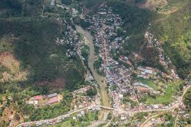

How was it when i was in middle school?
I was studying at a public school in Anosibe an'ala  several years ago. In that time, I did some part time jobs while it's free time, weekend or holiday.
I and my older sister were living alone and we took our food and staff in a village called Ambodiara every Saturday.
When I was in high school:
After getting my BEBC diploma in middle school, I continued my study in high school in the same town. I made lot of friends that some of them had quite similar to my ancient experiences. On top of that, I have got three best friends who are still closer to me so far.
We used to study together as a group when outside of the class and helped each other with training to prepare for exams and that resulted well.
I got my BACCALAUREAT diploma on 2015.
What and how is my study now?
After teaching in a little village called Ambodimerana, a NGO called ONJA, asked some students including me to have a test providing that the students who passed the test can continue their studies at Onja.
It has been over a year that I have studied at Onja. Onja school is in Mahanoro, east of Madagascar. We have got a beautiful environment here. We did english course last year and on January this year, we have started our coding course.
We have got such an amiable, sociable and reliable teachers. I think we are doing well so far.